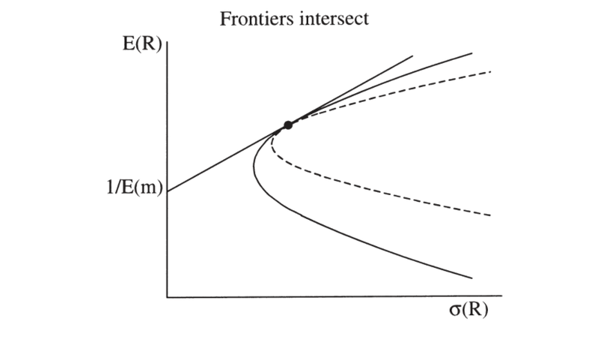

13. GMM for Linear Factor Models in Discount Factor Form
13. GMM for Linear Factor Models in Discount Factor Form
本章导读 本章（Cochrane 第 13 章）以 \(p=\mathbb E(mx)\)、\(m=b'f\) 形式估计与检验线性因子模型，自然用定价误差作矩做 GMM。核心发现：这些估计与第 12 章的回归估计极其相似——一阶 GMM 就是 OLS 截面回归、二阶就是 GLS 截面回归。§13.1 定价误差 GMM = 截面回归；§13.2 超额收益情形（均值 \(m\) 不可识别，需归一化；可得"均值收益对协方差"的回归）；§13.3 赛马（一组因子能否挤掉另一组）；§13.4 检验定价因子：用 \(\lambda\) 还是 \(b\)？（关键区分）；§13.5 均值方差前沿与业绩评价（张成 vs 相交）；§13.6 检验特征（β 能否挤掉规模/账面市值比等）。
13. GMM for Linear Factor Models in Discount Factor Form
Overview This chapter (Cochrane Ch 13) estimates and tests linear factor models in \(p=\mathbb E(mx)\), \(m=b'f\) form, naturally using the pricing errors as moments for GMM. The key finding: these estimates look a lot like the regression estimates of Chapter 12 — first-stage GMM is an OLS cross-sectional regression, the second stage a GLS cross-sectional regression. §13.1 pricing-error GMM = cross-sectional regression; §13.2 the excess-return case (the mean of \(m\) is unidentified, needs normalization; yields a regression of mean returns on covariances); §13.3 horse races (does one set of factors drive out another); §13.4 testing for priced factors: \(\lambda\) or \(b\)? (a key distinction); §13.5 mean-variance frontier and performance evaluation (spanning vs. intersection); §13.6 testing for characteristics (do betas drive out size/book-market).
13.1 定价误差 GMM = 截面回归 / GMM on Pricing Errors Gives a Cross-Sectional Regression
把常数 \(a\) 当作一个常数因子，模型即 \(E(p)=E(xf')b\)（\(p,x\) 是 \(N\times1\)、\(f,b\) 是 \(K\times1\)）。最自然的矩就是定价误差 \(g_T(b)=E_T(xf'b-p)\)（这是个选择，非必然——GMM 与 \(p=\mathbb E(mx)\) 不必绑定）。\(\min_b g_T'Wg_T\) 的一阶条件 \(d'Wg_T=0\)，其中 \(d'=\partial g_T'/\partial b=E_T(fx')\) 是支付与因子的二阶矩。线性模型可解析求解：
13.1 GMM on Pricing Errors Gives a Cross-Sectional Regression
Treating the constant \(a\) as a constant factor, the model is \(E(p)=E(xf')b\) (\(p,x\) are \(N\times1\), \(f,b\) are \(K\times1\)). The natural moments are the pricing errors \(g_T(b)=E_T(xf'b-p)\) (a choice, not a necessity — GMM and \(p=\mathbb E(mx)\) are not paired). The first-order condition of \(\min_b g_T'Wg_T\) is \(d'Wg_T=0\), where \(d'=\partial g_T'/\partial b=E_T(fx')\) is the second moment of payoffs and factors. The linear model solves analytically:
$$\hat b_1=(d'd)^{-1}d'E_T(p)\ \ (\text{first stage, OLS}),\qquad \hat b_2=(d'S^{-1}d)^{-1}d'S^{-1}E_T(p)\ \ (\text{second stage, GLS}).$$
一阶 = OLS 截面回归，二阶 = GLS 截面回归 / First stage = OLS, second stage = GLS cross-sectional regression 一阶估计是把平均价格对"支付与因子的二阶矩"做 OLS 截面回归，二阶是 GLS 截面回归。 还有什么更合理？模型说平均价格应是该二阶矩的线性函数，那就做线性回归——"数据点"是各检验资产的样本平均价格（y）与支付-因子二阶矩（x）。标准误正是带误差协方差 \(S\) 的 OLS/GLS 回归公式：\(\operatorname{cov}(\hat b_1)=\tfrac1T(d'd)^{-1}d'Sd(d'd)^{-1}\)、\(\operatorname{cov}(\hat b_2)=\tfrac1T(d'S^{-1}d)^{-1}\)。\(S\) 是截面回归"误差" \(E(p)-E(xf')b\) 的协方差阵。模型检验是定价误差的二次型，二阶时 \(Tg_T'S^{-1}g_T\sim\chi^2(\#\text{mom}-\#\text{par})\)。The first-stage estimate is an OLS cross-sectional regression of average prices on the second moment of payoffs with factors; the second stage is a GLS cross-sectional regression. What could be more sensible? The model says average prices are a linear function of that second moment, so run a linear regression — the "data points" are each test asset's average price (y) and payoff-factor second moment (x). The standard errors are exactly the OLS/GLS regression formulas with error covariance \(S\): \(\operatorname{cov}(\hat b_1)=\tfrac1T(d'd)^{-1}d'Sd(d'd)^{-1}\), \(\operatorname{cov}(\hat b_2)=\tfrac1T(d'S^{-1}d)^{-1}\). \(S\) is the covariance of the cross-sectional regression "errors" \(E(p)-E(xf')b\). The model test is a quadratic form in pricing errors; for the second stage \(Tg_T'S^{-1}g_T\sim\chi^2(\#\text{mom}-\#\text{par})\).
13.2 超额收益情形 / The Case of Excess Returns
线性因子模型最常用于超额收益，但此时\(m\) 的均值不可识别（\(E(mR^e)=0\Rightarrow E((2m)R^e)=0\)；类比贝塔模型里零贝塔利率水平无信息）。写 \(m=a-b'f\) 时 \(a,b\) 不能分开识别，须选归一化（纯属方便，不可识别恰意味着定价误差不依赖归一化的选择）。
13.2 The Case of Excess Returns
Linear factor models are most often applied to excess returns, but then the mean of \(m\) is unidentified (\(E(mR^e)=0\Rightarrow E((2m)R^e)=0\); analogous to no information on the zero-beta rate level in beta models). Writing \(m=a-b'f\), \(a\) and \(b\) cannot be separately identified, so one picks a normalization (purely for convenience — unidentification precisely means the pricing errors don't depend on the choice).
- 归一化 \(a=1\)：\(g_T(b)=-E_T(R^e)+E(R^ef')b\)，\(d=E(R^ef')\)（收益与因子的二阶矩）。GMM 估计是把平均超额收益对"收益-因子二阶矩"做截面回归。
- 归一化 \(a=1+b'E(f)\)（即 \(m=1-b'[f-E(f)]\)，\(E(m)=1\)）：\(d=E(R^e\tilde f')\) 成了协方差阵。GMM 估计是把期望超额收益对"收益-因子协方差"做截面回归——模型说 \(E(R^e)=-\operatorname{cov}(R^e,f')b\)，协方差取代了贝塔。这与第 12 章截面回归几乎完全一致。
唯一的"苍蝇"：\(E(f)\) 是估计的，分布理论应纳入这一抽样变动（类比第 12 章 β 是生成回归元）。用合适的分块权重 \(a_T\) 可一并处理，得到类似 Shanken 校正的标准误（实践中很小，但理解后易做对）。注意：这个"二阶段"回归并非真正的有效 GMM 估计——真有效估计是 \(a_T=d'S^{-1}\)（不分块），它允许让某些矩偏离样本值以换取其他矩更接近零。
13.3 赛马 / Horse Races
常想检验"一组因子能否挤掉另一组"（如 Chen-Roll-Ross 1986 问五个宏观因子是否好到连市场收益都可忽略）。估一般模型 \(m=b_1'f_1+b_2'f_2\)，问 \(b_2=0\) 否：① Wald 检验 \(\hat b_2'\operatorname{var}(\hat b_2)^{-1}\hat b_2\sim\chi^2_{\#b_2}\)；② χ² 差检验：估受限模型 \(m=b_1'f_1\)（同一 \(S\)），\(TJ_T(\text{restricted})-TJ_T(\text{unrestricted})\sim\chi^2(\#\text{restrictions})\)（类似似然比检验）。
13.4 检验定价因子：用 \(\lambda\) 还是 \(b\)？ / Testing Priced Factors: \(\lambda\) or \(b\)?
- Normalization \(a=1\): \(g_T(b)=-E_T(R^e)+E(R^ef')b\), \(d=E(R^ef')\) (the second moment of returns and factors). The GMM estimate is a cross-sectional regression of mean excess returns on the return-factor second moments.
- Normalization \(a=1+b'E(f)\) (i.e. \(m=1-b'[f-E(f)]\), \(E(m)=1\)): \(d=E(R^e\tilde f')\) becomes the covariance matrix. The GMM estimate is a cross-sectional regression of expected excess returns on the return-factor covariances — the model says \(E(R^e)=-\operatorname{cov}(R^e,f')b\), with covariances replacing betas. This is almost identical to the Ch 12 cross-sectional regression.
The one fly in the ointment: \(E(f)\) is estimated, and the distribution theory should account for this sampling variation (analogous to β being a generated regressor in Ch 12). An appropriate block-diagonal weighting \(a_T\) handles it, giving standard errors resembling the Shanken correction (small in practice, but easy to do right once understood). Note: this "second stage" regression is not the truly efficient GMM estimate — the efficient one uses \(a_T=d'S^{-1}\) (not block-diagonal), which lets some moments deviate from sample values to bring others closer to zero.
13.3 Horse Races
One often tests whether one set of factors drives out another (Chen-Roll-Ross 1986 ask whether five macro factors price assets so well that even the market return can be ignored). Estimate a general model \(m=b_1'f_1+b_2'f_2\) and ask whether \(b_2=0\): ① a Wald test \(\hat b_2'\operatorname{var}(\hat b_2)^{-1}\hat b_2\sim\chi^2_{\#b_2}\); ② a χ²-difference test: estimate the restricted model \(m=b_1'f_1\) (same \(S\)), \(TJ_T(\text{restricted})-TJ_T(\text{unrestricted})\sim\chi^2(\#\text{restrictions})\) (like a likelihood-ratio test).
13.4 Testing for Priced Factors: \(\lambda\) or \(b\)?
\(b\) 与 \(\lambda\) 问的是不同问题 / \(b\) and \(\lambda\) ask different questions \(b\) 与 \(\lambda\) 由 \(\lambda=E(ff')b\) 相联。\(b_j\) 是 \(m\) 对 \(f_j\) 的多元回归系数：问"给定其他因子，因子 \(j\) 是否还有助于定价"——若 \(b_j=0\)，去掉 \(f_j\) 也能一样好地定价。\(\lambda_j\) 正比于 \(m\) 对 \(f_j\) 的单回归系数 \(\lambda_j=\operatorname{cov}(m,f_j)\)：问"因子 \(j\) 是否被定价（其模仿组合是否有正溢价）"。因子正交时 \(E(ff')\) 对角、\(\lambda_j=0\iff b_j=0\)；但因子常相关，此时该测 \(b_j=0\) 而非 \(\lambda_j=0\) 来决定是否纳入因子 \(j\)。例：CAPM 为真 \(m=a-bR^{em}\)，加一个与市场正相关的伪因子 \(R^{ex}\)，则 \(b_x=0\)（不帮助定价），但 \(\lambda_x=E(R^{ex})>0\)（被"定价"）！故问"因子是否被定价"看 \(\lambda\)，问"因子是否帮助定价其他资产"看 \(b\)——这是总体值的区分，与抽样无关。\(b\) and \(\lambda\) are related by \(\lambda=E(ff')b\). \(b_j\) is the multiple-regression coefficient of \(m\) on \(f_j\): it asks "given the other factors, does factor \(j\) still help price assets" — if \(b_j=0\), we price just as well without \(f_j\). \(\lambda_j\) is proportional to the single-regression coefficient of \(m\) on \(f_j\), \(\lambda_j=\operatorname{cov}(m,f_j)\): it asks "is factor \(j\) priced (does its mimicking portfolio carry a positive premium)." When factors are orthogonal \(E(ff')\) is diagonal and \(\lambda_j=0\iff b_j=0\); but factors are often correlated, and then test \(b_j=0\) not \(\lambda_j=0\) to decide whether to include factor \(j\). Example: the CAPM holds, \(m=a-bR^{em}\); add a spurious factor \(R^{ex}\) positively correlated with the market — then \(b_x=0\) (does not help price), but \(\lambda_x=E(R^{ex})>0\) (is "priced")! So for "is the factor priced" look at \(\lambda\); for "does the factor help price other assets" look at \(b\) — a distinction of population values, nothing to do with sampling.
13.5 均值方差前沿与业绩评价 / Mean-Variance Frontier and Performance Evaluation
因子模型为真 \(\iff\) 因子（或其模仿组合）的线性组合在均值方差前沿上，故任何因子模型检验都可解读为"某收益是否在前沿上"的检验。一个 \(m=a-bR^p\) 的 GMM 检验即检验 \(R^p\) 是否在检验资产的前沿上（如国际分散化、基金经理业绩评价：是真本事还是运气？）。但若想检验一组资产 \(R^d\) 是否张成 (span) \(R^d\) 与 \(R^i\) 合并的前沿，须当心：无无风险利率时 \(R^d\) 的前沿可能只与合并前沿相交 (intersect) 而非张成（图 13.1）。
13.5 Mean-Variance Frontier and Performance Evaluation
A factor model holds \(\iff\) a linear combination of the factors (or their mimicking portfolios) is on the mean-variance frontier, so any factor-model test can be read as a test of "is a given return on the frontier." A GMM test of \(m=a-bR^p\) tests whether \(R^p\) is on the test assets' frontier (e.g. international diversification, fund-manager performance evaluation: real skill or luck?). But to test whether a set of assets \(R^d\) spans the combined frontier of \(R^d\) and \(R^i\), take care: with no risk-free rate, the \(R^d\) frontier may merely intersect the combined frontier rather than span it (Figure 13.1).

图 13.1 两条均值方差前沿可能只相交而非重合。检验 \(m=a-b'R^d\) 在单一 \(a\) 值下给 \(R^d\) 与 \(R^i\) 定价，只能检验"相交"；要检验"张成/重合"，须对两个预设 \(a\) 值同时成立。
Figure 13.1 Two mean-variance frontiers might intersect rather than coincide. Testing that \(m=a-b'R^d\) prices both \(R^d\) and \(R^i\) for a single value of \(a\) only checks intersection; to test spanning/coincidence, it must hold for two prespecified values of \(a\) simultaneously.
De Santis (1993)、Chen-Knez (1995, 1996) 给出区分张成与相交的检验：相交时 \(m=a-b_d'R^d\) 仅对一个 \(a\)（即 \(E(m)\)）给两者定价；若前沿重合/张成，则对任意 \(a\) 都给两者定价。故对两个固定的 \(a_1,a_2\) 同时检验 \(m=a-b'R^d\) 给 \(R^d,R^i\) 定价，即检验张成（用 \(J_T\) 检验四组矩）。
13.6 检验特征 / Testing for Characteristics
常想看模型能否挤掉某特征（如规模、账面市值比、波动率）。好模型应让 β 解释平均收益、而定价误差不再与特征相关。把特征 \(y^i\)（如规模档）放进矩：\(g^i_T=E_T(m_{t+1}(b)x^i_{t+1}-p^i_t-\gamma y^i_t)\)，\(\gamma\) 的估计告诉你特征与模型定价误差的关联；标准 GMM 公式给 \(\gamma\) 的标准误或 \(\gamma=0\) 的 χ² 差检验（含 \(E(y)\) 须估计这一事实）。
小结 / Summary
把线性因子模型写成 \(p=\mathbb E(mx),m=b'f\) 并用定价误差作矩做 GMM，得到的一阶/二阶估计正是 OLS/GLS 截面回归——与第 12 章殊途同归。超额收益时 \(m\) 均值不可识别须归一化（\(a=1+b'E(f)\) 给出"收益对协方差"的回归）。赛马用 Wald 或 χ² 差检验。最重要的概念区分是 \(b\) vs \(\lambda\)：判断"是否纳入某因子"应测 \(b_j=0\)（多元回归系数），而非 \(\lambda_j=0\)（单回归系数 = 是否被定价）。还可检验前沿张成（需两个 \(a\)）与特征是否被挤掉。下一章转向最大似然。
De Santis (1993) and Chen-Knez (1995, 1996) test spanning vs. intersection: for intersection, \(m=a-b_d'R^d\) prices both for just one value of \(a\) (i.e. \(E(m)\)); if the frontiers coincide/span, it prices both for any \(a\). So test spanning by checking \(m=a-b'R^d\) prices \(R^d,R^i\) for two fixed values \(a_1,a_2\) simultaneously (a \(J_T\) test on four sets of moments).
13.6 Testing for Characteristics
One often checks whether a model drives out a characteristic (size, book/market, volatility). A good model should let betas explain average returns, with the pricing errors no longer associated with the characteristic. Put the characteristic \(y^i\) (e.g. a size rank) into the moments: \(g^i_T=E_T(m_{t+1}(b)x^i_{t+1}-p^i_t-\gamma y^i_t)\); the estimate of \(\gamma\) tells you how the characteristic relates to the model's pricing errors, and the standard GMM formulas give the standard error of \(\gamma\) or a χ²-difference test for \(\gamma=0\) (including the fact that \(E(y)\) is estimated).
Summary
Writing a linear factor model as \(p=\mathbb E(mx),m=b'f\) and using the pricing errors as moments for GMM, the first/second-stage estimates are precisely OLS/GLS cross-sectional regressions — converging with Chapter 12. With excess returns the mean of \(m\) is unidentified and needs a normalization (\(a=1+b'E(f)\) gives a regression on covariances). Horse races use Wald or χ²-difference tests. The most important conceptual distinction is \(b\) vs \(\lambda\): to decide "whether to include a factor" test \(b_j=0\) (the multiple-regression coefficient), not \(\lambda_j=0\) (the single-regression coefficient = whether it is priced). One can also test frontier spanning (needs two \(a\)'s) and whether characteristics are driven out. The next chapter turns to maximum likelihood.
习题 / Problems
- 推导 \(m=1-b'[f-E(f)]\)（超额收益）一阶估计的 GMM 分布理论，须认 \(E(f)\) 是样本估计的。用 \(g_T=[E_T(R^e-R^e(f'-Ef')b);\ E_T(f-Ef)]\)、\(a_T=\operatorname{diag}(E_T(\tilde f R^{e\prime}),I_K)\)，参数为 \(b,Ef\)。应得到类似 Shanken 校正 (12.19) 的 \(b\) 标准误、与不变的 \(J_T\) 检验。
- 证明若用单回归 β，则对应的 \(\lambda\) 可用于检验因子的边际重要性；但此时 \(\lambda\) 不再是模仿组合的期望收益。
- 从 Ken French 网站取 Fama-French 三因子与 25 个规模/账面市值比组合，用以下方法评价三因子模型，各给系数、标准误、\(\alpha'V^{-1}\alpha\) 检验、RMS 定价误差、实际 vs 预测均值收益图与 \(R^2\)：(a) 时序回归（OLS+GRS / GMM 0 滞后）；(b) 截面 OLS/GLS（无 Shanken / Shanken / GMM）；(c) Fama-MacBeth；(d) DF 形式 \(m=1-b'f\) 一阶/二阶 GMM；(e) \(m=1-(f-Ef)'b\)（收益对协方差）；(f) 能否去掉市场因子？去掉 SMB？
Problems
- Derive the GMM distribution theory for the first-stage estimate of \(m=1-b'[f-E(f)]\) (excess returns), recognizing that \(E(f)\) is estimated. Use \(g_T=[E_T(R^e-R^e(f'-Ef')b);\ E_T(f-Ef)]\), \(a_T=\operatorname{diag}(E_T(\tilde f R^{e\prime}),I_K)\), parameters \(b,Ef\). You should get a standard error for \(b\) resembling the Shanken correction (12.19) and an unchanged \(J_T\) test.
- Show that with single-regression betas, the corresponding \(\lambda\) can test the marginal importance of factors; but then \(\lambda\) are no longer the expected returns of factor-mimicking portfolios.
- From Ken French's website take the Fama-French three factors and 25 size/book-market portfolios; evaluate the three-factor model with the following methods, reporting coefficients, standard errors, the \(\alpha'V^{-1}\alpha\) test, RMS pricing errors, an actual-vs-predicted mean-return plot and its \(R^2\): (a) time-series regression (OLS+GRS / GMM 0 lags); (b) cross-sectional OLS/GLS (no Shanken / Shanken / GMM); (c) Fama-MacBeth; (d) DF form \(m=1-b'f\) first/second-stage GMM; (e) \(m=1-(f-Ef)'b\) (returns on covariances); (f) can you drop the market factor? Drop SMB?